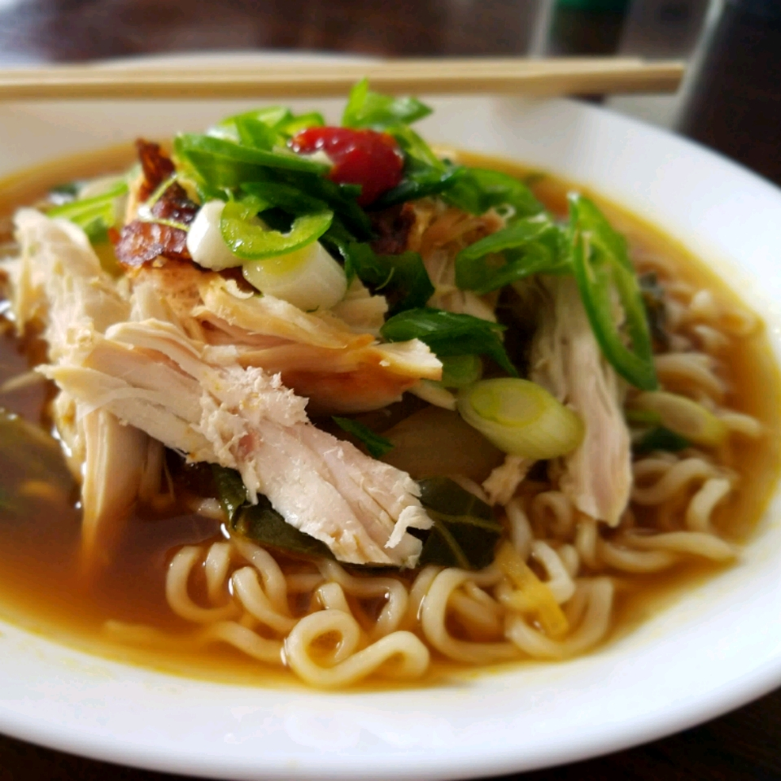

Chicken Ramen Bowl

Description
A tasty meal for those who can't afford to wait.
This recipe is for chicken lovers who prefer to spend less time on the cooking and more time on the eating.
You'll find that the ingredients are easily available as well.
Ingredients
- 1 medium onion, thinly sliced
- 3 cloves garlic, minced
- 1 tablespoon freshly grated ginger
- ½ cup rice vinegar, or to taste
- ½ cup reduced-sodium soy sauce
- 2 tablespoons oyster sauce
- 2 tablespoons mirin
- 1 tablespoon fish sauce
- 1 tablespoon sriracha sauce
- 4 cups low-sodium chicken broth
- 1 cup water
- 1 cooked chicken breasts, shredded
- ¾ pound baby bok choy, quartered lengthwise
- 3 (3 ounce) packages dried ramen noodles
- 1 tablespoon vegetable oil
- 4 eggs
- 1 jalapeno pepper, sliced, or to taste
- 2 green onions, chopped, or to taste
- ¼ cup chopped cilantro, or to taste